СводкаТаблицаСкриныПравилаFigmaБиблиотекаДопущения
css/uslugi-b.css карточка включается только по max-width:1023px, а JS (hvs.js) переходит в режим касания и по (hover:none). На Главной так не происходит (там в CSS условие есть). Исправление — одна строка.Стратегии: а — масштабировать как есть · б — отдельная мобильная компоновка (свой viewBox) · в — горизонтальная прокрутка с подсказкой · г — упрощённая версия · д — разворот в вертикаль. Кегль — минимальный размер подписи на экране, px (после масштаба). «скрыто» — подписи меньше 12 px скрыты, смысл несёт карточка под схемой.
| Графика (страница) | 1920 | 1440 | 1200 | 768 | 390 | Проблемы | Стратегия | Приор. |
|---|---|---|---|---|---|---|---|---|
| Схема узла (Главная) · 9 элем., 19 точек | 9,4* | 7* | 5,9* | скрыто | скрыто | 390: схема 374×175 (масштаб 0,28), точки в 21 px друг от друга — визуально каша, хотя тап попадает верно. Figma 390 — фрагмент + прокрутка. *микротекст на приборах | в (как Figma) | П2 |
| «Услуги» Главной — кадры чертежа (img, 8 сост.) | 7,9* | — | 5* | скрыта | скрыта | Штамп листа и подписи 13 px в SVG ⇒ 5–8 px на экране даже на десктопе. На ≤1199 скрыта (решение дизайнера). Высота блока по строкам аккордеона меняется (785–875 на 1200) — это аккордеон, нормально | а (десктоп), скрыть ≤1199 | П3 |
| «Этапы работ» (котельная / лента / дом) | 12 | 12 | 12 | 13 | 12 | Норма. RULES §4 обещал вертикаль на мобильном, но и HTML, и Figma 390 — лента; RULES устарел. В Figma 390 «от теплосети» наезжает на трубу | в | П3 |
| «Наш подход» + индикатор | 16 | — | 15 | 16 | 16 | Труба индикатора на 9 px шире контейнера на 768/390 (за экран не выходит) | а | П3 |
| Карта ИТП, вар. B (Обследование) | 19 | 14,5 | 12,1 | скрыто | скрыто | 1024 с мышью: 10,2. Тап 6/6 верно; карточка 182–204 (прыжок 22 px на 390) | в | П3 |
| Прямые участки (Обследование) | 14,5 | 10,9 | 9,1 | 8 | 3,5 | На странице старая схема sx-run, не mini-straight из Figma. На 390 нечитаема. В Figma 390 кадр 592 в слоте 342 — обрезан («РАСХОДОМ…») | б + д (3 ситуации стопкой, каждая на всю ширину) | П1 |
| Шкала ТУ (Обследование) | 16 | — | 15 | 16 | 16 | HTML — норма (на 390 вертикально). Figma 390: кадр 546 шире экрана | д (уже) | П3 |
| ГОСТ-схема (Проектирование) | 16,7 | 12,5 | 8,8 | 6,5 | 3,1 | На странице старая схема с номерами (sx-node, 14 подписей видно на 390). Figma и библиотека — схема с точками и карточкой | в (взять из библиотеки) | П1 |
| Порог 0,2 Гкал/ч (Проектирование) | 12 | — | 12 | 12 | 12 | Норма. Figma 390: кадр 507 шире экрана | а | П3 |
| mini-list, 13 листов (Проектирование) | иконки без подписей, 64→48 | Норма. В Figma есть Device-варианты Info Card / Sheet | а | П3 | ||||
| «Монтаж по шагам» (Установка) · 8 шагов, 12 точек | 12 | 9* | 6,3* | скрыто | скрыто | Тап 12/12 верно. Есть Device-варианты в Figma (агент дизайнера). На 1024 касанием — не работает (см. критично) | в | П2 |
| Датчик в трубе (Установка) | 13 | 9,8 | 6,9 | скрыто | скрыто | «⅓ Ду / ½ Ду / ⅔ Ду / зона погружения» — смысловые подписи; на 1200 6,9 px, на тач скрыты и в карточке их нет ⇒ смысл теряется | б (крупный фрагмент зоны погружения, подписи HTML-слоем) | П1 |
| Опломбирование (Сервис) | 6,4* | 4,8* | 4* | скрыто | скрыто | «Монтажная длина прибора» 12 → 7,4 на 1200 — смысловая | в + правило подписей | П2 |
| Шкала сезона Б (Сервис) | 17 | 12,9 | 9 | 11,1 | 11,1 | 1200: подписи периодов 9 px. 390: прокрутка 1120/318, карточка месяца 193–345 px — прыжок 152 px | в + фикс. высота карточки | П2 |
| График погрешности (Сервис, img) | 12 | — | — | 13 | 6,9 | На 390 график ужат до 342 (контейнер с overflow:auto не прокручивается), а подпись «листайте график» показывается | в (min-width 592) или б | П2 |
| Было / Стало / Реконструкция (Ремонт) | 10,6* | 7,9* | 5,6* | скрыто | скрыто | Высота стабильна, тап верно во всех 3 состояниях | в | П3 |
| Пиктограммы объектов ИТП/ВВОД/В СЕТЬ | 11,6 | 8,7 | 7,3 | 7,2 | 7,2 | Подпись в иконке нечитаема на всех ширинах | г (без текста) | П2 |
| Иконки услуг / карточек / Icon Box hero | без текста | Норма. Icon Box на 390 скрыт (по правилам) | а | П3 | ||||
| Разделители-трубы | без текста | Норма; в Figma — фреймы 704 / 342, не компоненты | а (труба тянется, элемент по центру) | П3 | ||||
| Hero-цифры | 14 | — | 13 | 14 | 14 | 390: лента с прокруткой без подсказки (в Figma «← листается →») | в | П3 |
* — минимум даёт декоративный микротекст на приборах; смысловые подписи этих схем ≥ 12 на 1920, но падают ниже 12 на 1200–1440.
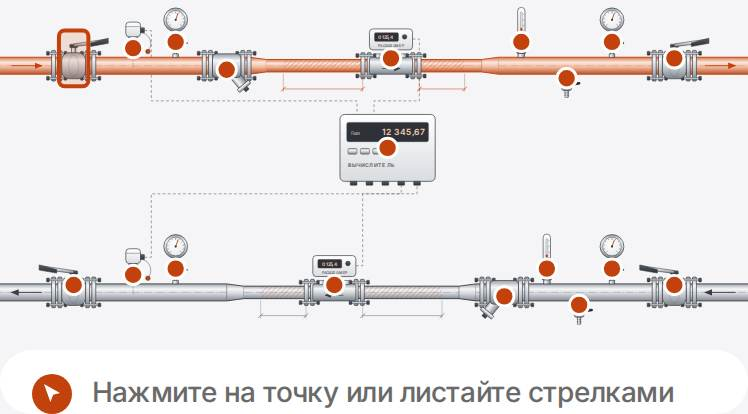
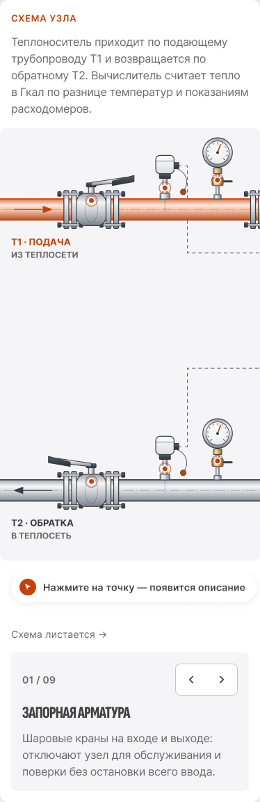
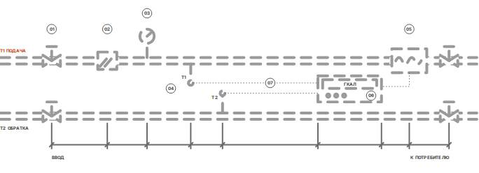
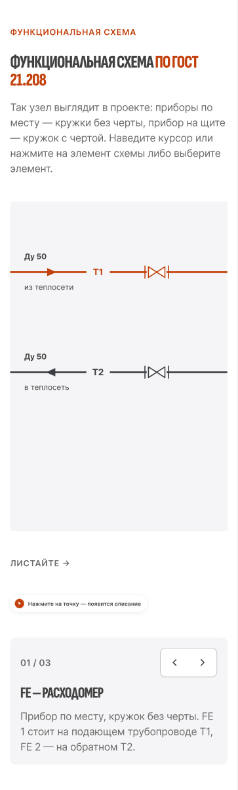
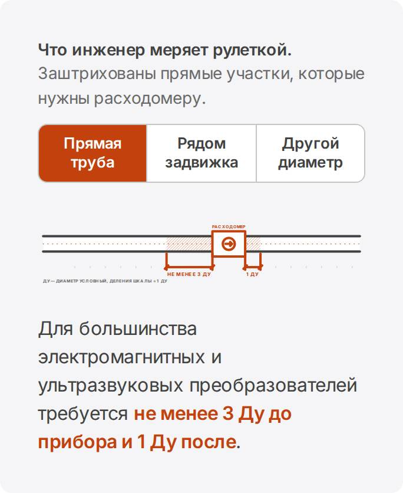
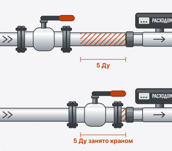
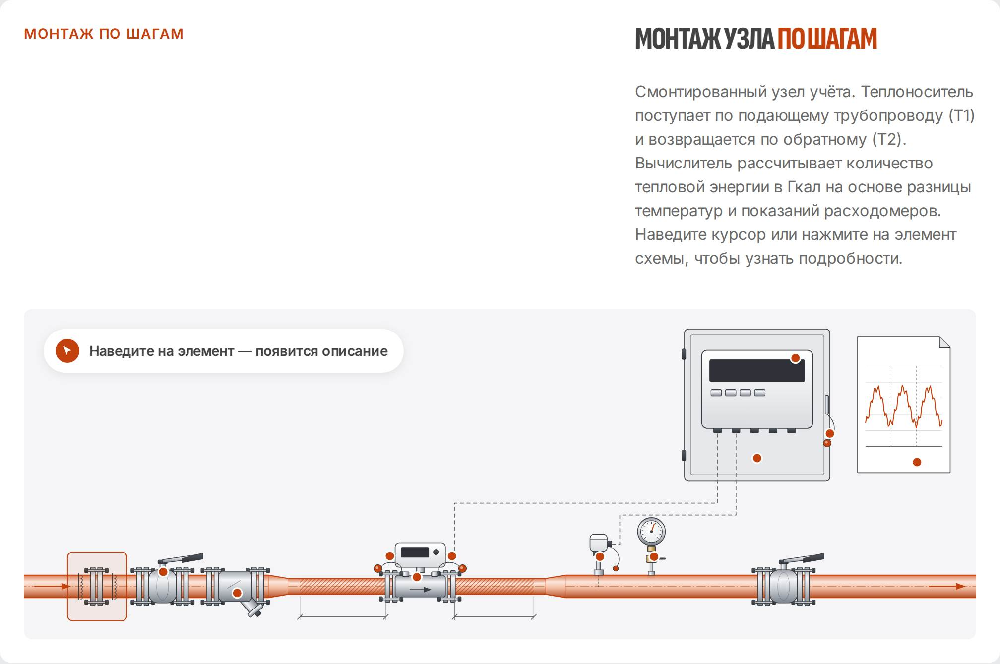
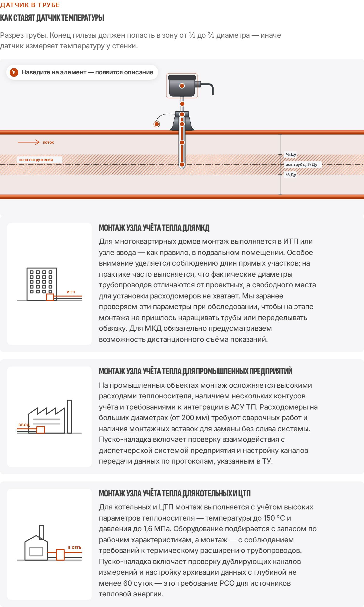
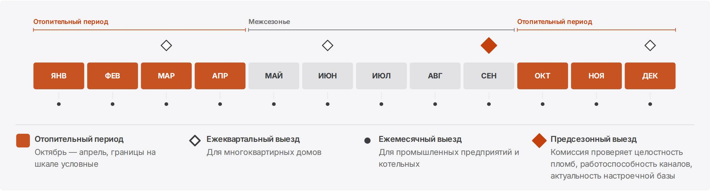
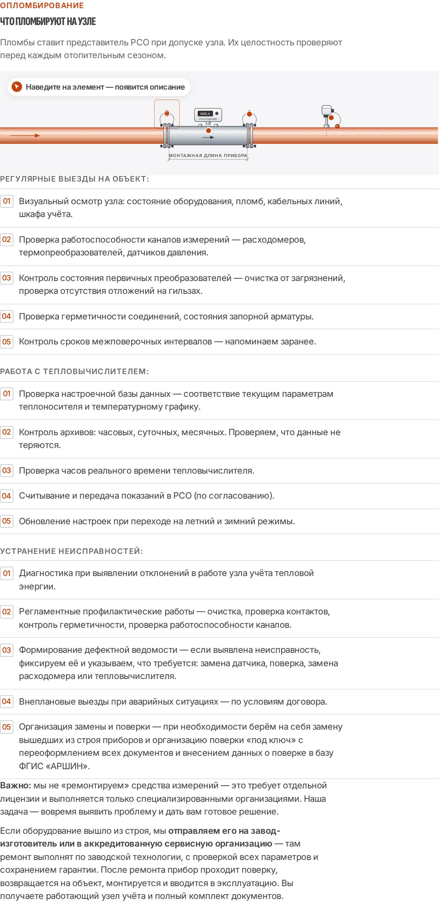
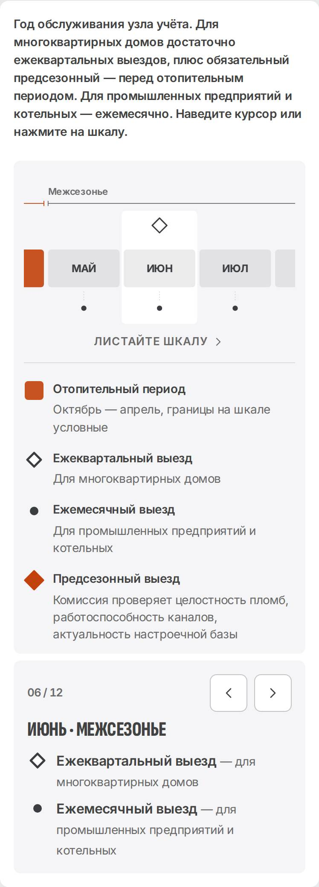
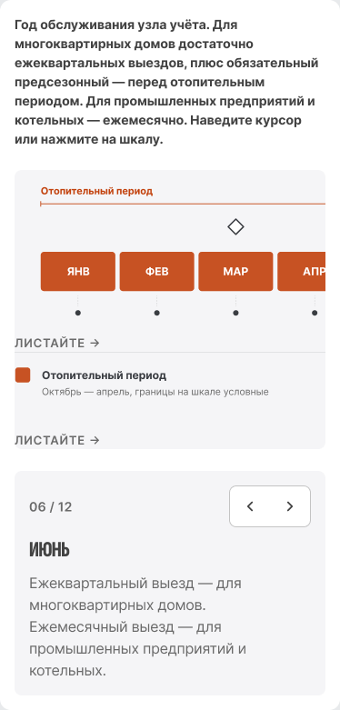
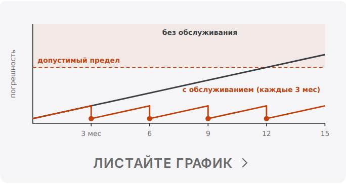
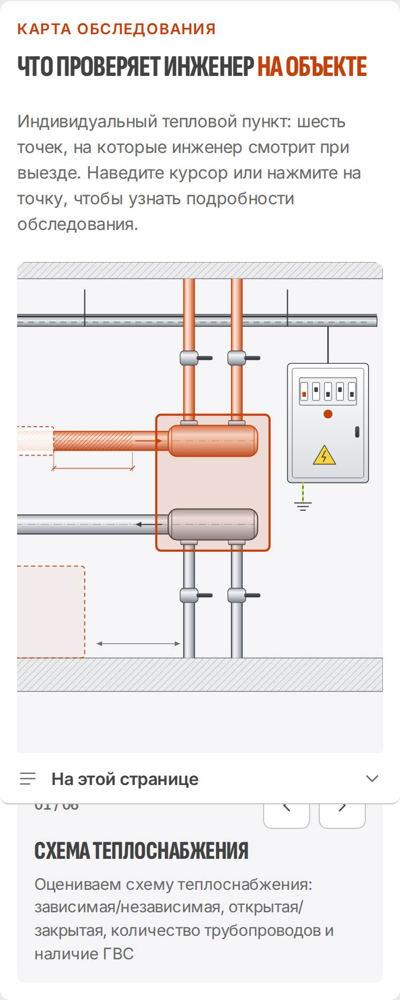
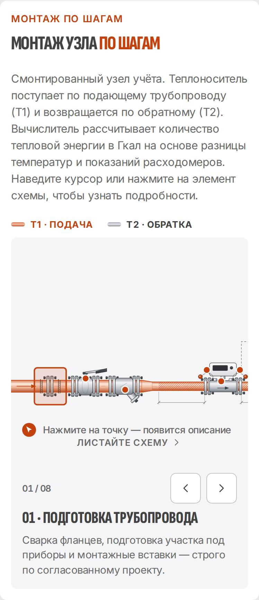
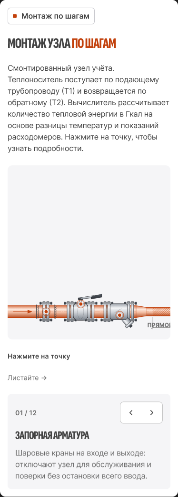
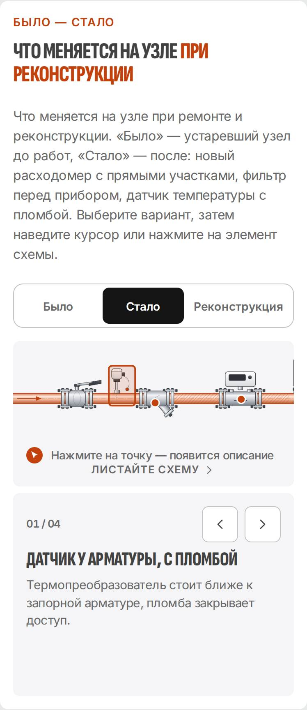
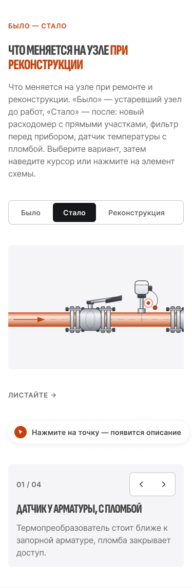
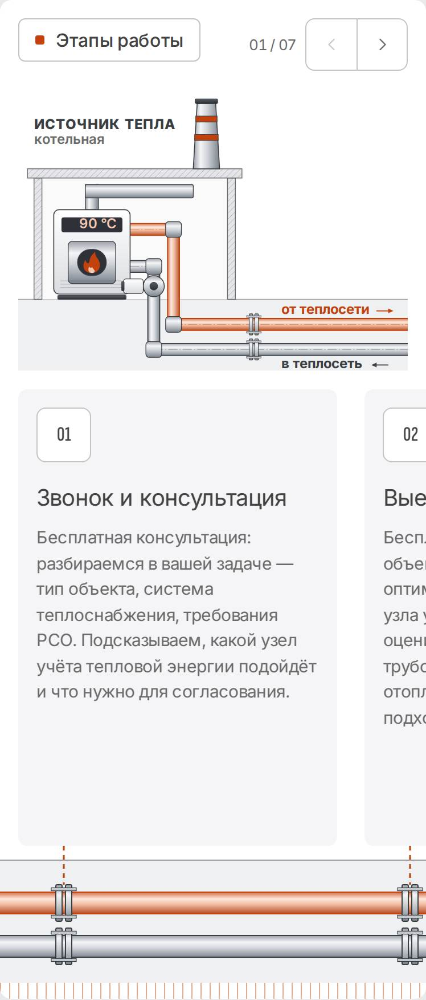
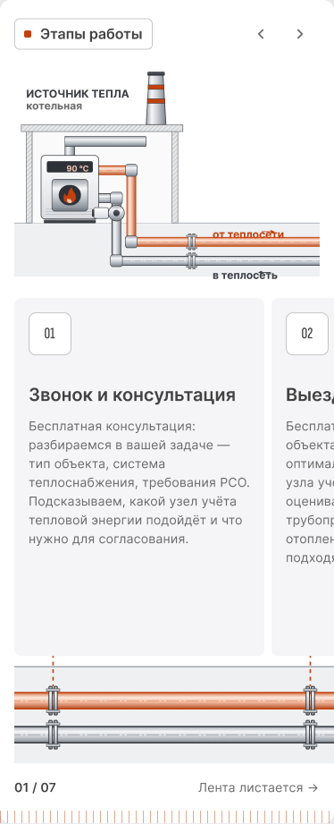
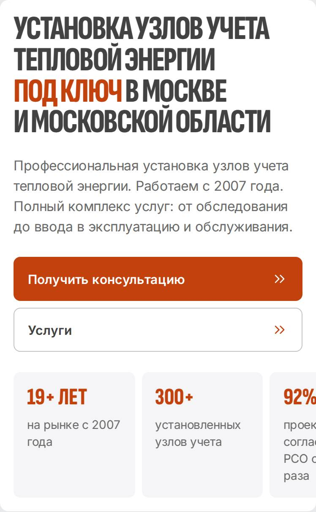
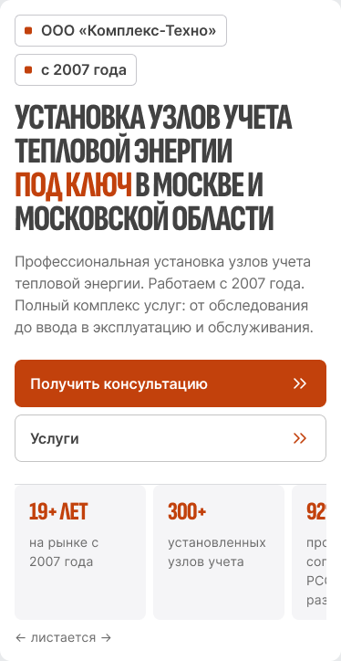
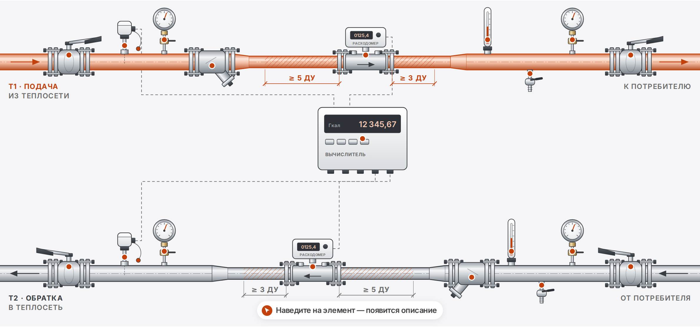
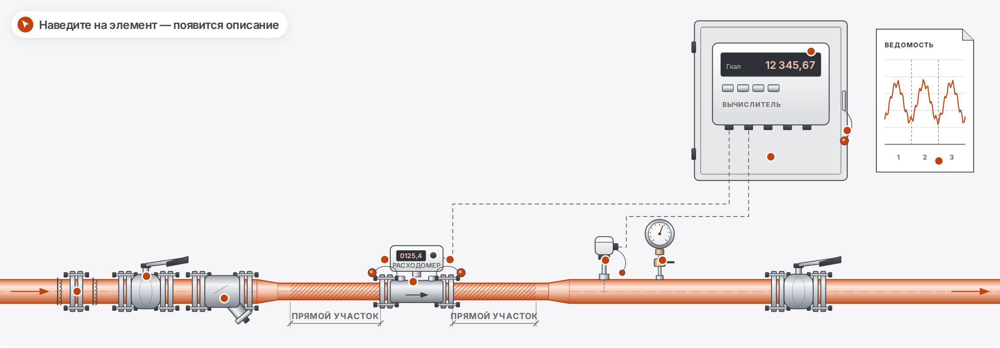
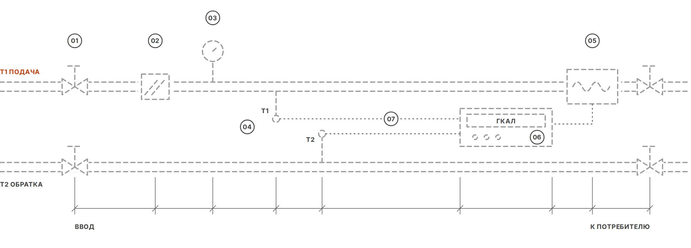
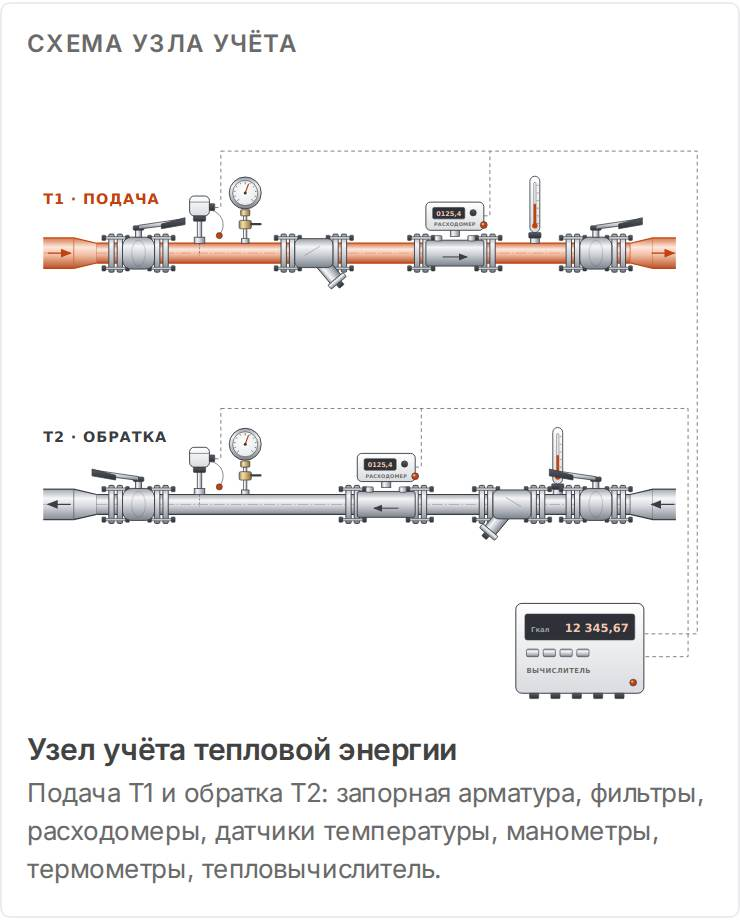
class="decor", на ≤ 1199 скрывать.hvs.js распространить и на десктоп 1024–1440 (сейчас работает только в режиме касания), но только для декора; для смысловых — минимальный масштаб схемы (см. 3).(max-width:1023px), (hover:none).min-width и прокрутку с подсказкой (стратегия в).hvs.js).viewBox без width/height; точки — <g class="dot" data-k>, зоны — .hit data-k; подписи — <text> с font-size атрибутом (по нему считается скрытие), декор с class="decor"; шрифты Inter / Sofia Sans, не в кривых; без <foreignObject>.clipPath, без <pattern>; стрелки — отдельными path, без marker; без mask с градиентами; текст оставить текстом; группы по элементам с именами (как в 989:14286).*-m.svg со своим viewBox, те же data-k.Installation / Scheme 1523:19501, / Sensor 1523:19502, / Mini trial, Scheme / Hotspot 1523:17805 и др. — Desktop/Tablet/Mobile. Плюс общие Scheme / Mobile Card (Tablet/Mobile), Slider Progress, Step, Info Card / Sheet.Services / Illustration 976:18468 (только «Сцена»), Scheme / Hover Tooltip 971:6864 (один компонент), Illustration/Узел — Ремонт 123:2174. Схемы узла, ИТП, ГОСТ, сезон, опломбирование, Было/Стало, mini-* и Divider/Pipe/* — не компоненты, а локальные фреймы в каждом кадре 768/390.mini-straight (2 строки, обрезан 592 → 342); HTML — sx-run с переключателем 3 ситуаций.biblioteka-grafiki.htmlsxrun) в библиотеке — старая версия, как на странице. После правок по П1 пересобрать библиотеку (teplo-graphics/library/build.py).hasTouch, без мыши) — медиа (hover:none) срабатывает; на реальном iPad ожидаю так же, живым устройством не проверял.font-size × масштаб SVG; для <img>-SVG — по минимальному font-size в файле и viewBox. Декор/смысл разделены мной по содержанию подписи.measure.json.adaptiv/audit/shots/ местами виден липкий заголовок — артефакт съёмки, не дефект.uslugi-b.css — добавить , (hover:none) к медиа карточки/легенды схем (вместе с остальными «≤1023» правилами режима касания).sx-node на фрагмент с точками из библиотеки.mini-straight, мобильная компоновка стопкой (и в Figma 390).